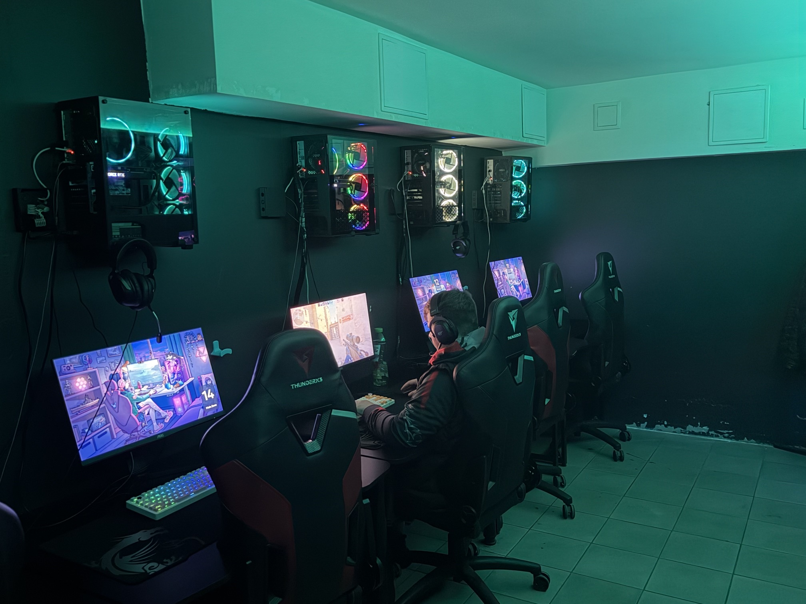

Собирай команду
Турнир по [игре] — [дата] в [клубе]
Формат, взнос и регистрация: [ссылка]
Японский киберпанк
Каллиграфическое граффити
Четкий цифровой интерфейс
DOJO / БРЕНДОВАЯ СИСТЕМА
Исходная геометрия сохраняется во всех вариантах
Когда имя важнее символа
Аватар, иконка, малое нанесение
Новая сборка исходных мастеров
DOJO / БРЕНДОВАЯ СИСТЕМА
Новые правила применения для этого комплекта
Поле свободно от текста, края и активного изображения
Для компактной версии сохраняем больше воздуха
Искажение пропорций
Свечение и тень
Поворот мастер-знака
Для печати минимум задается в мм после пробника
Проверяем материал, способ нанесения и читаемость деталей • Экранные минимумы — при 1×DOJO / БРЕНДОВАЯ СИСТЕМА
Кисть живет в креативах и одежде, геометрия — в продукте
Пользовательский растровый референс
Не производственный вектор
Крупный жест, свободный край, ограниченная палитра
Исходный SVG, чистый силуэт, стабильный размер
Не перерисовывать и не векторизовать самостоятельно
Запросить мастер-файл до нанесения и сделать пробу
DOJO / БРЕНДОВАЯ СИСТЕМА
Красный — действие и характер • Бирюза — редкий сигнал
Основа интерфейса
и темных носителей
Текст, светлые поля
и предметная среда
Действие, знак
и акцентная масса
Фокус и отдельные
служебные сигналы
На красном — темный ink #040C12 / контраст 4,89 : 1
Состояние всегда поддерживаем текстом или иконкой
Обычный текст ≥ 4,5 : 1 • Крупный ≥ 3 : 1 • W3C WCAG 2.2, критерий 1.4.3
DOJO / БРЕНДОВАЯ СИСТЕМА
Tektur 600 / 700 + Golos Text 400 / 500
GOLOS TEXT / 400
Выберите игру и войдите в свой аккаунт. Если нужна помощь, администратор рядом.
Golos держит длинный текст, подписи и интерфейс без декоративного шума
В документах и письмах: Arial, затем системный sans-serif
Одна замена для заголовка и текста • Без имитации Tektur и изменения знака
Основной текст и элементы управления
Подписи и метаданные, без уменьшения ради вместимости
DOJO / БРЕНДОВАЯ СИСТЕМА
База 4 px • Сетка связывает носители, а не ограничивает характер
Текст занимает 6 колонок
Фотография — следующие 6
Разворот / 12 колонок / gutter 24 px / внешние поля 76 px
Заголовок, подпись и край фото стоят на линиях одной сетки
Mobile / gutter 16 / поля 20
В креативе допустим кроп знака • В интерфейсе графика не проходит под мелким текстом
DOJO / БРЕНДОВАЯ СИСТЕМА
Сетка 24 × 24 • Штрих 1,75 • Простые окончания
Иконка помогает распознать действие
Важные состояния имеют подпись
Фокус 3 px • Отступ 4 px
Минимальная цель 44 × 44 px
brand/assets/icon-01.svg — icon-12.svg
Новую пиктограмму добавляем отдельным SVG: 24 × 24, штрих 1,75 px, круглые окончания
Проверяем в 16 / 24 / 32 px, даем понятное имя и подпись действия
DOJO / БРЕНДОВАЯ СИСТЕМА
Уверенно, коротко, без давления и искусственного геймерского сленга
В ИНТЕРФЕЙСЕ
На «ты» в креативах, нейтральные команды в интерфейсе
Врывайся и доминируй прямо сейчас
Проверьте соединение или позовите администратора
Что-то пошло не так
Без вымышленного процента и обещания «через секунду»
Твой вечер
Твоя игра
СОБИРАЙ СВОИХ
DOJO / БРЕНДОВАЯ СИСТЕМА
Точные векторные нанесения поверх отдельных предметных мокапов
Небольшой знак на груди
Один цвет / красный
Крупная маска на спине
Один цвет / красный
Визуализация нанесения • SVG-макеты отдельно • Цвет и размер проверяются на ткани
DOJO / БРЕНДОВАЯ СИСТЕМА
Тактильные носители с разной функцией
Можно обратиться
за помощью
Свободный контур вокруг знака
Без переписывания геометрии
Роль читается раньше имени
Никакого декоративного мелкого текста
Макет размещения в интерфейсе клуба
SVG и PNG с прозрачностью
Не логотип SmartGamer и не совместный знак
Одобрение SmartShell не приложено
Публичное размещение не подтверждено этим макетом
Имя, баланс, номер ПК и действия добавляет интерфейс
Вход, оплата и постоянная кнопка помощи
Фон не сообщает статус подключения
Причина блокировки, номер ПК, действия и помощь
добавляются приложением
Актуальный статус и номер ПК из системы
Без вымышленного прогресса
DOJO / БРЕНДОВАЯ СИСТЕМА
Меняем людей, технику и масштаб — сохраняем палитру и силуэт
Не фото гостей и не арт издателей

Выразительный образ для обложки

Спокойная уверенность и живые ткани

Движение, плоский цвет, сухой край

Настоящие эмоции и среда клуба
Сток не выдаем за фотографию DOJO
Типографика, исходный знак и фотография
Лицо не обязательно на каждом носителе